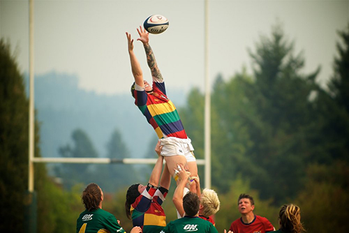
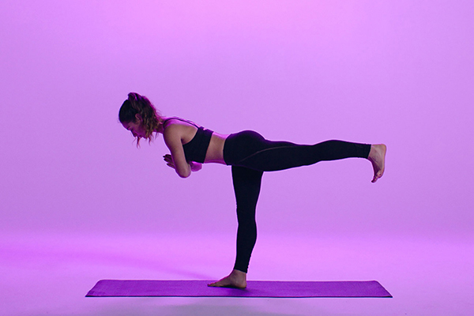
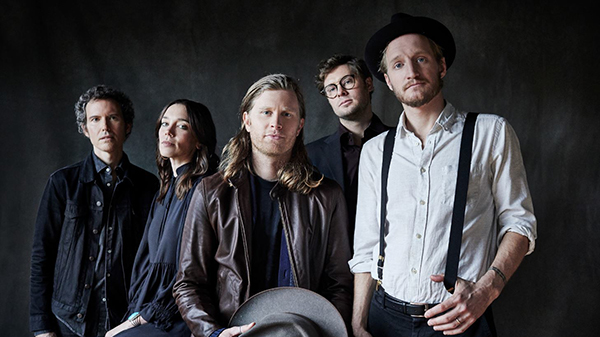
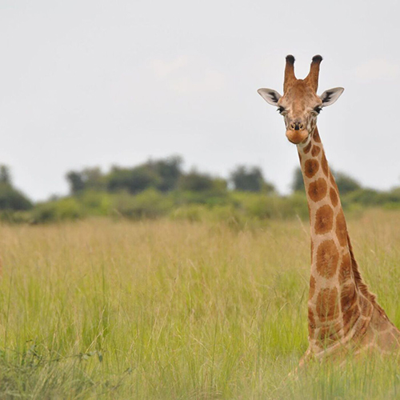
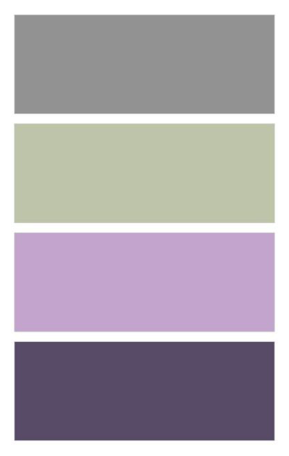
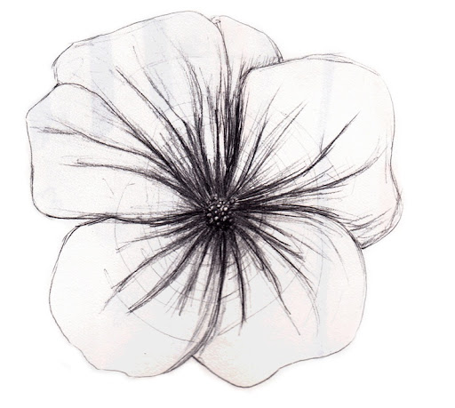
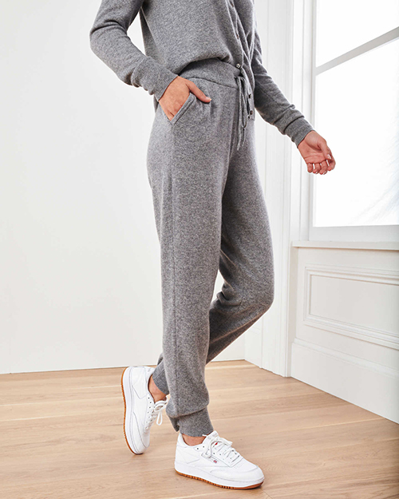

| |
Emma is a current senior from Rochester New York. |
| Emma is studying both Economics and Graphic Design at Lehigh University. |
 |
|  |
Emma is a student athlete at Lehigh as she is part of the women's rugby team. |
| Post graduation Emma would like to stay on the East coast. |
 |
|  |
Emma Loves to practice yoga and meditation every morning. Her favorite is hot yoga. |
| Emma prefers to listen to indie music. Her favorite band is the Lumineers. |
 |
|  |
Emma noted that her favorite animal is a giraffe because she was very tall growing up. |
| As a graphic design minor, Emma focuses a lot on color schemes. Some of her favorites include lavenders paired with sage green. |
 |
|  |
Emma loves flowers and often incorperates them into her designs. |
| Emma said she would describe her fashion sense as "comfy and casual". |
 |